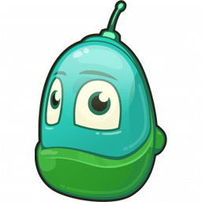
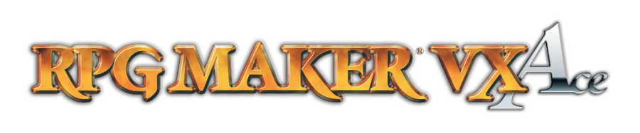

Programy używane przy tworzeniu gier
Programy do tworzenia
Silników do tworzenia jest masa. Są darmowe, są i te płatne
Na który się zdecydujemy to już indywidualna decyzja
zależąca od tego, jaką grę chcemy stworzyć.
- GameMaker Studio 2 - Jeżeli jesteś bardziej wymagającym
użytkownikiem pozycja jest idealna dla ciebie.
Można tu projektować gry w trybie 2D oraz 3D.
Program jest wszechstronny i dostępny na wielu platformach
systemowych, przez comamay projekty zawsze pod ręką
nie zależnie jakiego urządzenia używamy. Aplikacja dostarcza nam
kompletne środowisko programistyczne do tworzenia gier.
Aplikacja zapewni nam że gry możemy tworzyć dla komputerów PC i Mac,
smartfonów i tabletów opartych na systemie Google Android,
iOS i Windows Phone,a nawet konsol Xbox One i
PlayStation Vita, 3 i 4.
Interfejs jest czytelny, jednak wymaga
skupienia, ponieważnie jest opracowany
w formie symboli a komend i akcji.
- RPG Maker VX Ace - Lubisz styl starych gier RPG?
RPG Maker VX Ace to dobry wybór jeśli chcesz zrobić
właśnie taką produkcję! Mapy jak i postaci rysuje się
bardzo przyjemnie. Sam program jest bardzo intuicyjny i
przejrzysty co sprawia, że korzystanie z niego to czysta
zabawa. Najbardziej mozolna część tego programu to
pisanie statystyk, przedmiotów, klas i ataków. Ale
efekt końcowy tych prac jest tego wart. W programie
spod szyldu RPG Maker wyszły m.in. takie gry jak
Mars Underground czy OneShot. Program jest świetny
dla osób które wiedzą czego chcą i do czego dążą w
swoim produkcie.
- Unity -jest to wieloplatwormowy silnik gier do tworzenia gier
komputerowych 2D i 3D lub innych materiałów interaktywnych,
takich jak wizualizacje czy animacje.
Silnik ten jest napisany w C, C++ (Runtime) i C# (Unity API).
Unlitly obsługuje wiele platworm są to między innymi Windows,
Linux, Android.
Wśród nich znajdują się także konsole
siódmej oraz ósmej generacji.Kompatybilne z Unity są również hełmy
rzeczywistości wirtualnej takie jak Oculus Rift i Gear VR.
Gry stworzone w Unity po zainstalowaniu wtyczki Unity Web
Player mogą działać również w przeglądarce internetowej.
- Unreal Engine - jest świetnym silnikiem do tworzenia
szczegółowych światów,pełnych detali i źródeł światła. Jest oparty
na C++ ale można go okiełznać bez wstępnej
znajomoścci języka programowania.Gry na tym silniku
pojawiają się na systemach Windows,MacOS, Linux, HTML5,
iOS, Android, PlayStation 4, PSVR, Nintendo Switch,
Oculus Rift, HTC Vive i wielu, wielu więcej.
Dosyć powiedzieć, że to właśnie na Unreal Engine 4
działa Fortnite – aktualnie najpopularniejsza,
najbardziej dochodowa gra świata.
- Kodu Game Lab - Kodu Game Lab to przyjazne
środowisko programistyczne, które nie wymaga
znajomości języków programowania typu C++. Panel
użytkownika w tym posiada interfejs po polsku oraz
składa się z prostych mechanizmów złożonych z ikon, a w
samym programie wszystko robimy za pomocą myszki
przesuwając elementy po ekranie. Kodu Game Lab jest
najlepszy dla osób początkujących, które nie miały
styczności z programowanie i robieniem gier ogólnie.
Źródła: Artykuł z Komputer Świat
Artykuł z Jaki język Programowania
Artykuł z Spidersweb


Artur Pinkiewicz i Aleksandra Szczukowska 2F